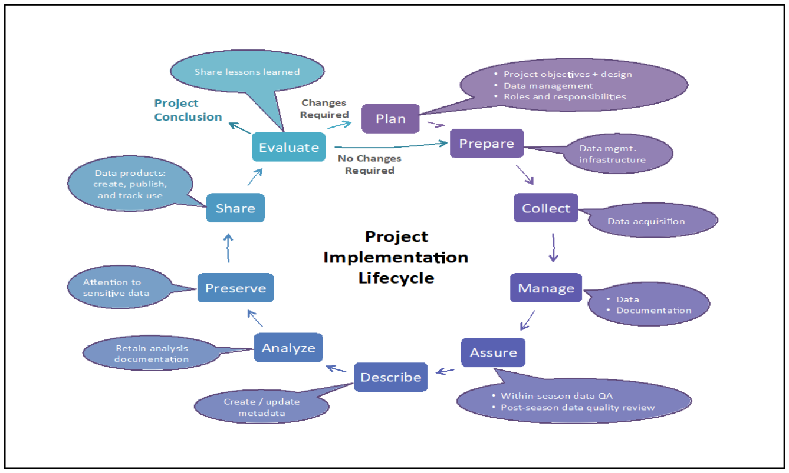

Why monitor
Recovering at-risk species and restoring native ecosystems is very complex. The MNLCP identifies priority species and ecosystems, the populations most in need of emergency action, the threats that most affect each one, and the management actions expected to move them toward recovery.plan p.101, lines 4003-4008 But managers also need to know whether those actions are producing a positive ecological response, and to be able to respond when results call for a change in strategy or methods.plan p.101, lines 4008-4011
Uncertainty is part of conservation work, and monitoring is how managers learn. Monitoring has shown, for example, that:plan p.101, lines 4012-4016
- mosquito control is essential to protecting forest birds from avian malaria;
- fencing and ungulate removal benefit at-risk plants when weeds are also controlled and fences are maintained; and
- the success of outplanting and rodent control depends on continued assessment.plan p.101, lines 4012-4016
Detecting change is itself uncertain. Populations and ecosystems vary over time and space and respond differently to past and present conditions, and a changing climate adds unpredictability to future threats such as fire.plan p.101, lines 4016-4020
Recognizing uncertainty is not discouraging. It gives managers room to pause, review and refine their approach, which leads to better decisions about which actions to take and how.
What adaptive management is
Adaptive management is a structured, step-by-step learning process that reduces uncertainty and leads, over time, to more effective actions. It has three parts: collecting monitoring data, evaluating that data, and using the evaluation to guide management decisions. Monitoring alone is not enough. The data must be evaluated and shared to influence decisions.plan p.101, lines 4022-4029
Adaptive management lets recovery actions go ahead despite uncertainty. It uses what is known and what is learned to confirm or revise strategies. And it leads to more effective, efficient and lasting results by prompting changes when an action is not working.plan p.101, lines 4031-4036 It also requires the ability to change course: monitoring is not a wise use of resources if there is no chance to act on what is learned.plan p.101, lines 4036-4038
What a good program delivers
A well-run adaptive management program:plan p.102, lines 4042-4062
- collects data over the long time frames needed to detect real change;
- produces tangible evidence of progress that supports institutional and funding decisions;
- allows managers to assess return on investment;
- improves understanding of the effects of management and of how species and ecosystems behave; and
- sets benchmarks that staff and partners can recognize as success.plan p.102, lines 4042-4062
It is also demanding. It needs sustained commitment, leadership, funding and partner involvement. Monitoring must focus on realistic objectives, be built into management, and be paired with analysis that is shared with colleagues, partners and decision-makers. And at a personal level, it takes humility and curiosity.plan p.102, lines 4062-4075
How the MNLCP frames monitoring
The MNLCP addresses 442plan p.102, line 4081 at-risk species across eight taxonomic groups, with management actions prioritized across Maui Nui.plan p.102, lines 4081-4084 For each species it sets quantitative population targets in a common currency of distribution and abundance and assigns them to specific planning units (PUs), the roughly 2 km² building blocks of the plan's maps.plan p.102, lines 4092-4100; Terms and Definitions, lines 4846-4852 These targets say not just how many individuals are needed for recovery, but where they are needed. The Adaptive Conservation Planner makes the targets available to managers for each species and PU.plan p.102-103, lines 4100-4108
So whatever method is used, the core question is the same: is the population in each targeted PU moving toward the abundance and distribution the MNLCP identifies? The plan supplies the targets; monitoring supplies the measurements; and adaptive management uses the results to decide whether current actions are enough or whether the location, type or intensity of management should change.plan p.103, lines 4109-4120
A successful MNLCP Adaptive Management Program would show the value of the Integrated Multi-Scale Conservation Planning (IMCP) approach, speed progress toward preventing extinctions and restoring ecosystems, build capacity for adaptive learning, and serve as a model for other islands and programs.plan p.103, lines 4121-4125
The adaptive management cycle
Adaptive management repeats as a cycle. Each turn starts from what was learned in the last one.plan p.101, lines 4022-4029; p.111-112, Figure 29 caption lines 4478-4483
- Set goals and objectives. Define the desired outcome and a monitoring objective for a species or ecosystem in a specific place. The MNLCP already provides the priority species or ecosystem, its location, and its PU targets.plan p.105-106, lines 4223-4255
- Design the monitoring. Choose what to measure, how much effort is warranted, the monitoring design, and a written protocol.plan p.106-110, lines 4257-4436
- Act and monitor. Carry out management and collect monitoring data, using the same methods at the same locations over time.plan p.101, line 4026; p.104, lines 4148-4151
- Manage and analyze the data. Check, document and store data so it stays usable over many years, and analyze it as planned.plan p.110-111, lines 4441-4476
- Evaluate. Review results in a structured, impartial way to judge whether actions are working, every year for effectiveness and every five to ten years for recovery status.plan p.112, lines 4485-4497
- Communicate. Share clear recommendations with managers and decision-makers, and report progress to funders, partners and the public.plan p.112, lines 4499-4520
- Decide and adapt. Continue current actions or change the location, type or intensity of management, then begin the next cycle.plan p.103, lines 4117-4120
Key adaptive management terms
Monitoring is gathering information through repeated measurements over time, and comparable data from multiple samples, to detect change, interpret results and improve management decisions. It is both a process (repeated measurement) and a purpose (better decisions). It tracks the status of populations and ecosystems against a desired condition, how well management works, how strong and damaging threats are, and how efficient management and monitoring are, and it helps spot new threats.plan p.103, lines 4133-4140
Because populations take years to expand and ecosystems take decades to recover, monitoring takes time to pay off.plan p.103, lines 4142-4143 Good monitoring is focused on what is needed to judge management, precise enough to detect ecologically meaningful change, repeatable, built on quality data, and sustained as long as needed.plan p.103-104, lines 4144-4151
Monitoring vs research. Monitoring tracks a change or trend tied to specific management actions. Research looks for the underlying causes of change. Research can make good monitoring but usually costs more.plan p.104, lines 4151-4154
Evaluation is the systematic, objective review of monitoring data: whether the monitoring design meets its objectives, whether implementation was effective and efficient, and whether results are valid and ecologically sound. Evaluation must happen before monitoring data can inform decisions.plan p.104, lines 4156-4160
Data management is the systematic, consistent handling of monitoring data so it is accurate and kept in an accessible database for future analysis.plan p.104, lines 4162-4170
Adaptive management combines all of these into a structured learning process that builds knowledge, reduces uncertainty and leads to more effective restoration, conservation and recovery.plan p.104, lines 4172-4174
Five types of monitoring objectives
Monitoring can focus on one or more of five objectives.plan p.104, lines 4175-4176
Implementation monitoring
Question: Was the planned action done, and how? It checks that a management action was completed and records where, when, how and by whom.plan p.104, lines 4178-4181
Effectiveness monitoring
Question: Did the action improve conditions for the population or ecosystem? For example: fewer threats, more individuals, higher survival and reproduction, healthier individuals, or a restored native understory.plan p.104, lines 4183-4189
Outcome monitoring
Question: Is a suite of actions preventing extinction and advancing recovery? This longer-term view combines data across all targeted populations of a species or ecosystem and adds signs of self-sustaining populations, such as new plants establishing, a growing range, fledglings produced, and recruitment of key ecosystem species.plan p.105, lines 4191-4203
Impact monitoring
Question: Is the program as a whole making progress toward recovery and restoration? It is a program-wide assessment, often summarized in a clear, well-designed dashboard.plan p.105, lines 4205-4209
Validation monitoring
Question: Which management methods work best, and why? Closer to research, it compares methods to find the most effective and efficient ones and explores the causes behind management responses.plan p.105, lines 4211-4213
A comprehensive adaptive management program should include the first four types. Validation monitoring is used where there is a specific need to better understand a management action.plan p.105, lines 4215-4216
Developing a monitoring plan
The plan describes five key steps. It gives enough detail to show what information is needed. Fully developing a monitoring plan will need more guidance from qualified experts.plan p.105, lines 4219-4221
Step 1. Specify the management goal and monitoring objectives
A management goal describes the desired outcome over a set time: what actions will be taken and the hoped-for impact. That impact can be a direction of change (more individuals, less invasive cover) or a threshold (raise a population above 400, or cut invasive cover below 10 percent).plan p.105-106, lines 4229-4236
A monitoring objective has five parts: the species or ecosystem, the location, the attributes to measure, the method, and the time frame for management and monitoring.plan p.106, lines 4238-4240
This step also covers telling the target apart from similar species or ecosystems, and detectability. Detection is rarely perfect: in some cases fewer than 70 percent of individuals present are detected. Detection can be improved by measuring detection rates or refining methods, such as how close together transects are.plan p.106, lines 4242-4250
The MNLCP already supplies the first parts of a monitoring objective, the priority species or ecosystem and its location. Manager expertise supplies the rest.plan p.106, lines 4252-4255
Step 2. Select attributes to measure
Attributes (also called indicators, metrics or parameters) are the characteristics measured to track change.plan p.106, lines 4259-4260
- For species: number of individuals, condition (survival, health, vigor, damage) and reproduction. Long-lived species may change slowly in abundance but faster in reproduction.plan p.106, lines 4261-4265
- For ecosystems: composition, vertical and horizontal structure, connectivity, species richness, reproduction of key species such as canopy or pollinator plants, and processes such as light-gap formation or fire and rain events.plan p.106, lines 4265-4269
- Indirect indicators can help when the link is known or reasonably assumed: canopy openness for understory vigor, burrow counts for seabirds, or water quality for aquatic invertebrates.plan p.106, lines 4271-4273
- Covariates, such as habitat, soils, rainfall or predation, should also be measured to help explain patterns.plan p.106, lines 4273-4276
Good attributes are relevant, reliable, easy to measure, easy to evaluate, and easy to explain to managers, experts and administrators.plan p.106-107, lines 4278-4283
Step 3. Decide how much to invest in monitoring
With 442 species, from invertebrates to birds, across 492 planning units, few projects can support a fully robust statistical design. But all can give useful insight if effort is focused well.plan p.107, lines 4287-4291 The plan's criteria for setting the level of monitoring are:plan p.107, lines 4291-4292
- Vulnerability, such as probability of extinction. For plants, this is reflected in PEPP (Plant Extinction Prevention Program) status. Among forest birds, kiwikiu and ʻākohekohe are considered most vulnerable.plan p.107, lines 4294-4301
- Uncertainty in the outcome of an action. Greater uncertainty calls for more monitoring; proven approaches such as fencing and ungulate control may need less.plan p.107, lines 4303-4305
- Opportunities, such as seed or plant availability, land access, funding, partnerships, or synergy with other actions.plan p.107, lines 4307-4308
- Return on investment. The more an action costs, the more valuable it is to know whether it is working.plan p.107, lines 4310-4311
In the end, the right level is a judgment call for leaders, managers and experts, possibly supported by a scoring method that combines these factors.plan p.107, lines 4312-4314
Step 4. Develop a monitoring design
The design sets how data will be collected and is central to precise, reliable and defensible results. There are three general approaches:plan p.107, lines 4316-4325
- Complete census. Count every individual (or unit, such as burrows), or fully measure an ecosystem, within a defined area. Quick, easy to evaluate and explain, and needs no statistics, which makes it efficient for many at-risk species with small populations.plan p.108, lines 4326-4333
- Index sample. Track trends in one or more sample areas that are not randomly placed. It works well when experienced ecologists choose the locations, but results cannot be used to estimate the whole population statistically.plan p.108, lines 4347-4353
- Probability-based sampling. When a population or ecosystem is too large to census, measure a representative subset and use statistics to estimate the whole.plan p.108, lines 4354-4358
Step 5. Compile a monitoring protocol
A monitoring protocol is a living document, ideally online and updated every year, that explains how monitoring is done: purpose, design, methods, data management and analysis, evaluation, reporting, and roles. Its main value is keeping monitoring consistent over time, across sites and among staff. Best practice includes standard operating procedures and testing the protocol with someone unfamiliar with the site.plan p.110, lines 4415-4425
Full checklist: steps to initiate a monitoring planDetails
The plan's sidebar lists ten steps:plan p.102, lines 4042-4103
- Specify the management goal and monitoring objective, and confirm the target can be reliably identified and detected.
- Select the attributes to measure.
- Determine the appropriate monitoring intensity.
- Choose a monitoring design (census, index sample, or probability-based sampling).
- Write a monitoring protocol and update it annually.
- Set up data management before data collection starts.
- Build in a regular evaluation cycle (for example, annual for effectiveness, every 5–10 years for recovery status).
- Establish a communication plan (for example, an annual accomplishment report and a status dashboard).
- Secure institutional commitment and capacity: leadership buy-in, dedicated funding, trained staff and clear roles.
- Foster an adaptive management culture, where staff are comfortable with uncertainty and expect management to change in response to what monitoring shows.plan p.102, lines 4042-4103
Designing a probability-based sample: seven questionsDetails
Designing a sample takes a team with expertise in the species, the management actions and sampling design.plan App 9 p.A9-3, lines 7862-7865 There is no single best design; each must fit its objective and ecological setting.plan p.108, lines 4358-4360; App 9 p.A9-2, lines 7843-7849
- What is the target population? The full set of individuals or ecosystem features the sample is meant to represent, such as a whole population or a defined subset, like individuals nesting on one cliff face.plan App 9 p.A9-3, lines 7867-7878
- What is the sample unit? Individuals, plots (quadrats), transects, points, or plotless (distance) methods, chosen by the attribute being measured. More variable populations generally need larger or longer plots.plan p.108-109, lines 4367-4378; App 9 p.A9-3-A9-4, lines 7880-7921
- How will units be placed? Randomly, well spread across the area and its natural variation, and far enough apart to be independent. Common designs: simple random, systematic, stratified random, cluster and two-stage sampling.plan p.109, lines 4380-4386; App 9 p.A9-4-A9-5, lines 7923-7954
- How many units are needed? More units mean more precision and power to detect change, but gains shrink beyond about 20 to 30 samples. A year of pilot sampling, or refining the design in the first few years, helps set sample size.plan p.109, lines 4387-4396; App 9 p.A9-5, lines 7956-7984
- Permanent or temporary units? Permanent units reduce variability between sampling events and increase statistical power, especially for perennial plants and nesting seabirds, but must be marked and relocated and may become less representative over time.plan p.109, lines 4398-4403; App 9 p.A9-5-A9-6, lines 7986-8007
- When will sampling happen? At the time of year and day when identification and detection are easiest and most consistent.plan p.109, lines 4405-4407; App 9 p.A9-6, lines 8009-8013
- How will the data be analyzed? An analysis plan, developed with the design, names the statistical tests, includes covariates, and anticipates the form of the results.plan p.109, lines 4409-4411; App 9 p.A9-6, lines 8015-8026
Census tips. A reliable census needs clearly defined boundaries, a consistent method and a consistent counting unit. Recording condition (age class, sex, signs of activity or threats) adds useful information at little cost. Standardized field sheets, photo plots or photo points, and drones or satellite imagery can improve consistency.plan p.108, lines 4333-4346
What goes in a monitoring protocolDetails
A complete protocol typically includes:plan p.110, lines 4427-4436; App 9 p.A9-7-A9-8, lines 8028-8099
- Purpose, goals and objectives: description and identification of the species or ecosystem (including detectability), status and priority, locations and directions, ecology, threats, and management concerns.
- Permits, authorizations, permissions and qualifications.
- Management goals and monitoring objectives, with the attributes for each objective.
- Monitoring design: methods for species, ecosystem and covariate measurements; personnel and equipment; schedule; surveys in adjacent and travel areas.
- Data management: data acquisition quality (tabular, spatial, photographic; equipment calibration), verification and validation, version control, archiving, distribution and publication.
- Roles and responsibilities for maintaining and implementing the protocol.
- Document history: development, lessons learned and recommended changes, and a record of review, approval and updates.
From monitoring data to adaptive decisions
Monitoring data are valuable only when they are available for analysis, evaluation and decisions, over both short and long time frames.plan p.110, lines 4439-4440
Managing and analyzing data
Detecting change usually takes data from many sampling cycles, so long-term datasets must be kept intact. That means clear procedures for collecting data, metadata, an accessible database, quality checks, infrastructure for future analysis, and lossless, nonproprietary file formats with clear archiving practices.plan p.110, lines 4442-4452
Data quality is assured in three steps: verification (is it complete?), validation (does it make scientific sense?) and certification (is it ready to use?).plan p.111, lines 4459-4461; App 9 p.A9-9, lines 8118-8125
For census and index data, results can usually be plotted and reviewed across years, keeping in mind what the data do and do not represent. For quantitative sampling, a power analysis, which calculates the minimum sample size needed to detect a change of a given size, shows what results can and cannot reveal.plan p.111, lines 4465-4470
Stages of data managementDetails
Data management follows the life of a monitoring project and repeats with it:plan p.111, lines 4456-4464; App 9 p.A9-9-A9-10, lines 8101-8149
- Plan: design data management at the start of the project.
- Prepare: infrastructure, procedures and training, roles, and file management.
- Collect: a data capture system and calibrated equipment.
- Manage: compile data (how, where, who).
- Assure quality: review during collection; then verify, validate and certify.
- Describe: metadata on what the data include, why and how they were collected, quality checks, and whom to contact.
- Analyze and evaluate: know the analysis before collecting; evaluate how results should change management.
- Preserve: archiving and access policies.
- Share: report to each audience in a suitable way.
- Evaluate data management: review the process itself.

Evaluation and reporting
Evaluation is the systematic, objective review of monitoring data to decide whether actions are working. It happens annually for effectiveness and every five to ten years for recovery status.plan p.112, lines 4485-4489 It looks at the type and implementation of actions, the population or habitat response, emerging threats, and how to allocate resources.plan p.112, lines 4489-4491
Evaluation should happen soon after data are available, while field details are fresh. With Hawaiʻi's varied growing and breeding seasons, that may mean quarterly evaluation meetings.plan p.112, lines 4491-4494 Good evaluation is structured (a facilitated process covering all relevant information), impartial (field staff plus independent reviewers) and inclusive of relevant expertise and managers.plan p.112, lines 4494-4497
Communicating results
Managers and decision-makers are the main audience. They need clear recommendations backed by data so they can report progress to administrators and funders. Other audiences include conservation practitioners, political leaders, institutions and the public. A communication plan can match each audience with key messages and channels, from written materials to social media, web content, video and presentations.plan p.112, lines 4499-4511
Two products have worked well elsewhere:plan p.112, lines 4513-4514
- An annual accomplishment report summarizing management, monitoring and protection by taxonomic group, species and area, with measures such as miles of fence built, acres of managed habitat, predator control coverage, populations monitored, species propagated and acres newly protected.plan p.112, lines 4514-4518
- A one- or two-page dashboard showing progress toward preventing extinctions, recovering species and restoring ecosystems, aimed especially at political leaders and the public.plan p.112, lines 4518-4521
A programmatic path forward
The MNLCP, the Adaptive Conservation Planner, and DOFAW's commitment to protecting biodiversity create a unique opportunity to build a comprehensive, lasting adaptive management program.plan p.113, lines 4527-4530 It will need to be tied to the missions of DOFAW and partner agencies, cover species, taxonomic groups and ecosystems, and continue over the long term.plan p.113, lines 4530-4534
The plan names seven critical components, adapted from Kusek and Rist (2004):plan p.113, lines 4536-4537
- Institutional understanding: information and training so staff, agencies and partners understand and support the program.
- A continuous need for monitoring data: program requirements to monitor and evaluate all management actions, with structured review by expert teams and clear timelines.
- Clear roles, responsibilities and expertise at every step: leadership, planning, monitoring design, data collection, protocols, analysis and data management, evaluation and communication.
- Regular reporting: an annual accomplishment report, a current status dashboard, and regular social media updates.
- Capacity for data collection, monitoring design, analysis and data management.
- Incentives that recognize success across all adaptive management tasks.
- An adaptive management culture that accepts the uncertainty in resource management and understands how monitoring reduces it and enables recovery.plan p.113, lines 4539-4561
With the MNLCP as its foundation, sustained leadership, dedicated managers and rigorous evaluation, this program is positioned to help prevent extinctions, advance recovery and restore Maui Nui's native ecosystems.plan p.114, lines 4566-4570
Sampling terms (Appendix 9)Details
- Target population: all individuals in a population, or all features of an ecosystem, that a sample is meant to describe.
- Population (observational) unit: the individual thing measured or counted, such as a plant, bird, snail, nest or burrow, or for ecosystems their composition, structure and species richness.
- Sample units: the units actually sampled, such as individuals, plots or burrows.
- Sample: the measured subset of all possible sample units at one point in time.
- Sample statistic: a value calculated from a sample, such as the mean, standard deviation, median or range, used to estimate the larger population.
- Inference: a conclusion about the target population drawn from the sample, usually with a calculated degree of certainty.
- Sampling error: the difference between a sample statistic and the true population value, caused by measuring only part of the population. It is a natural feature of sampling, not a mistake, and shrinks with larger samples and better designs.
- Precision: how close repeated measurements are to each other. It differs from accuracy, which is closeness to the true value.
- Power: the ability of a sampling design to detect a true change in the target population; designs aim to maximize it.
- Covariates: measurements that are not the main focus but influence the main attribute, such as invasive cover, soil disturbance, rainfall or temperature.plan App 9 p.A9-1-A9-2, lines 7793-7839